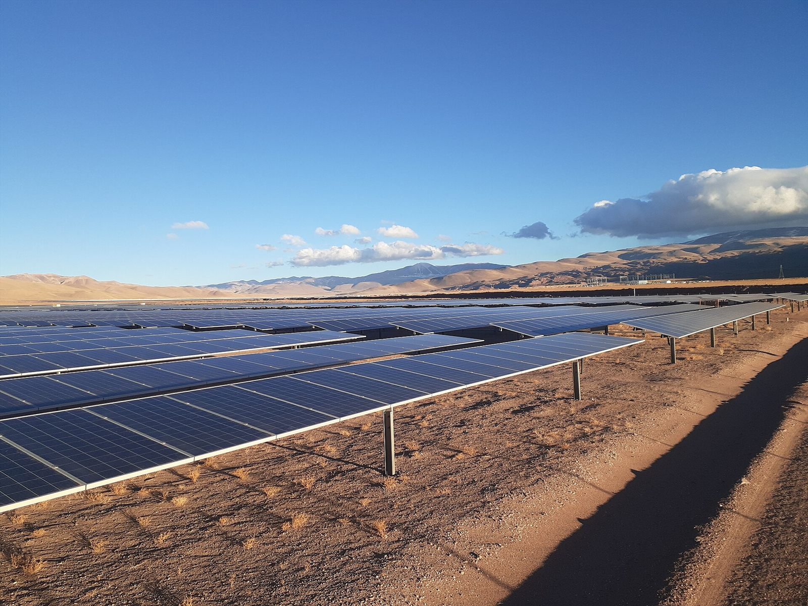

¿Cómo funciona la energía solar?
A diferencia de la hidro y la eólica, la solar fotovoltaica no usa turbinas: convierte la luz directamente en electricidad mediante el efecto fotoeléctrico. Paso a paso:
Cada panel está formado por celdas de silicio. Cuando la luz del sol (fotones) golpea la celda, entrega su energía a los electrones del silicio.
Esos electrones se desprenden de sus átomos. La celda está construida con dos capas de silicio dopado (tipo p y tipo n) que crean un campo eléctrico que ordena a los electrones moverse en una sola dirección.
El movimiento ordenado de electrones es corriente eléctrica continua (DC). Un panel genera típicamente entre 400 y 550 W en condiciones óptimas.
La red eléctrica funciona con corriente alterna (AC). Un inversor transforma la DC de los paneles en AC, y en parques grandes se conectan miles de inversores.
Un transformador eleva el voltaje y la electricidad de los miles de paneles de un parque se vierte a la red nacional de alta tensión.
La cantidad de energía que entrega cada panel depende de la radiación solar del lugar y de la inclinación de los paneles. El norte argentino tiene una ventaja enorme:
En la Puna jujeña, a más de 4.000 metros de altura, la radiación solar es de las más altas de Sudamérica: por eso Cauchari se convirtió en un parque de clase mundial.
Ubicación en Argentina
Los grandes parques solares se concentran en el NOA: Jujuy, Salta y Catamarca, en las regiones de mayor radiación del país. También hay plantas menores en San Juan, Mendoza y otras provincias, además de la creciente generación distribuida en techos de casas y comercios.

~300 MW en la Puna, uno de los parques solares más grandes de Sudamérica, junto a la localidad de Cauchari.
Uno de los primeros parques solares de escala del país, en la provincia con mayor radiación promedio.
Provincias con proyectos solares en expansión aprovechando la radiación del altiplano.
Paneles en techos de hogares y comercios en todo el país, con medidores bidireccionales que venden excedentes.
Potencia generada y rol en la matriz
Argentina tenía a fines de 2024 alrededor de 1.500 MW solares instalados, que generaron unos 3.900 GWh — cerca del 17% de la electricidad renovable del país. La solar fue la tecnología que más potencia nueva sumó en los últimos años.
Como porcentaje de la matriz total aporta todavía un 3-4% promedio, pero con un detalle muy valioso: genera justo en las horas pico de la tarde, cuando más demanda hay. Eso ayuda a "aplanar" la curva de consumo y ahorrar gas.
El límite nocturno es el talón de Aquiles solar: a las 19 horas la generación colapsa a cero justo cuando la demanda empieza a subir. Por eso la solar se combina con baterías y con fuentes de base como la nuclear y la hidro.
Ventajas y desventajas
- ✦ Sin emisiones ni combustible: el sol es gratis e inagotable.
- ✦ Costo del kWh en caída constante en la última década.
- ✦ Escalable: desde un panel en un techo hasta 300 MW en la Puna.
- ✦ Genera en las horas pico del día, aliviando la red.
- ✦ Solo genera de día; de noche su producción es cero.
- ✦ Depende del clima: nubes y niebla reducen la generación.
- ✦ Ocupa mucho terreno (muchos paneles por MW) y requiere minerales raros.
- ✦ Sin almacenamiento, su aporte no puede "trasladarse" a la noche.
En la matriz del futuro la solar y la eólica se complementan: el sol genera de día, el viento suele soplar más de noche, y las baterías y las centrales de base cubren los huecos. Para comparar todas las fuentes, volvé al mapa de todas las fuentes.
Conceptos Clave
- ✦ La solar convierte la luz directamente en electricidad (efecto fotoeléctrico): fotones → electrones → corriente continua → inversor → alterna.
- ✦ Ubicación clave: NOA (Cauchari en Jujuy, San Juan, Salta, Catamarca) con la mayor radiación de Sudamérica.
- ✦ Aporta ~17% de lo renovable y ~3-4% de la matriz, generando en las horas pico del día.
- ✦ Ventaja: limpia, escalable y en abaratamiento. Límite: solo de día y necesita almacenamiento.